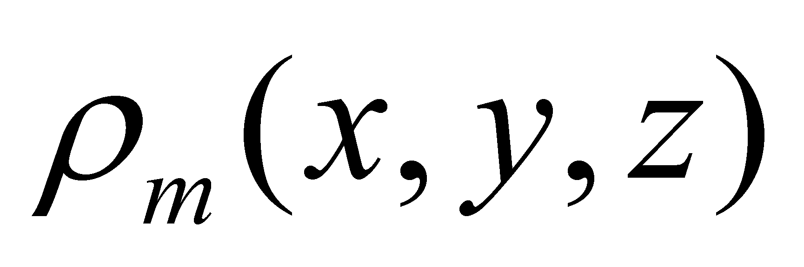
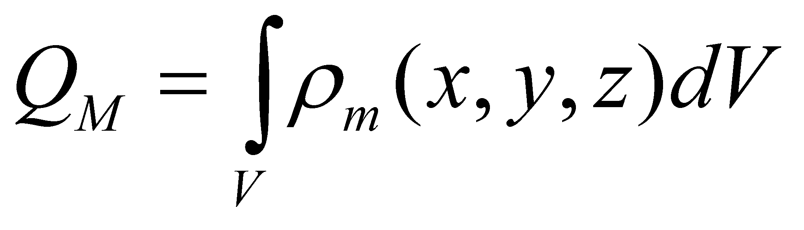
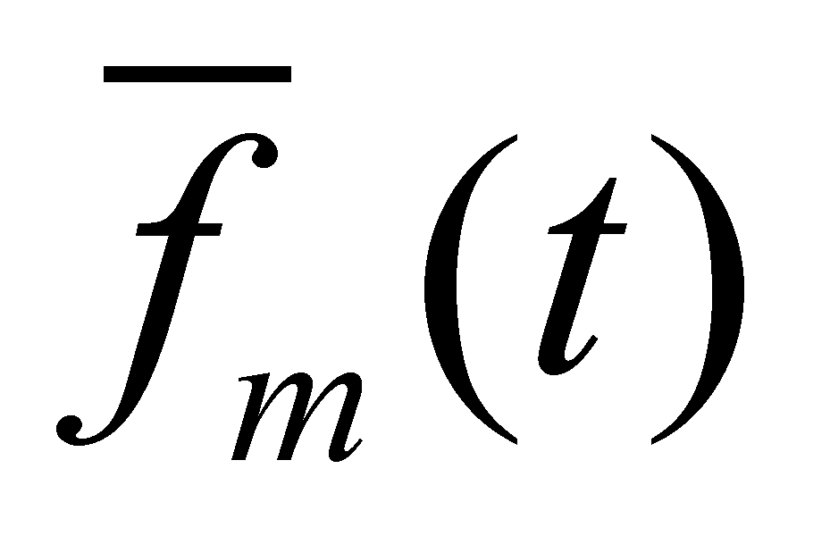
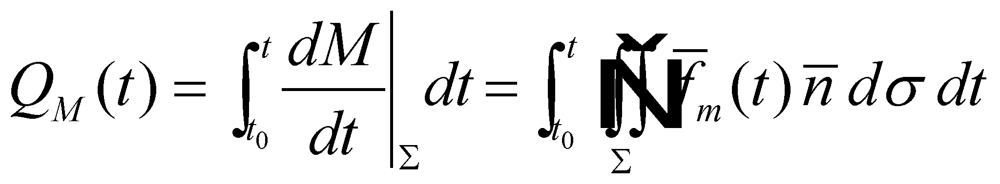

|
|
|
As we have previously noticed, an amount M placed in a certain area of the space, in a known volume V, limited by a closed area Σ, can be described by means of a spatial distribution of this amount on volume V. The total quantity of attribute M distributed in a spatial domain with volume V, limited by a closed area Σ is the attribute stockpile M inside that volume. Attention! In the chapter which was focused on distributions, we made the statement that the stockpile definition is valid only for the cumulative, extensive attributes (for which the addition and integration of the values assigned on the distribution’s elements is possible).
If the distribution refers to scalar, time invariant quantities (such as the mass density of a motionless body), we might say that the amount M is statically stored in that particular volume (such as the raw stocks, goods stored in warehouses, etc.). On the contrary, if the amount M is characterized by a distribution of some vectorial quantities (such as, for instance, a closed flux), then, it might be said that we are dealing with a dynamic stockage (for example, the quadergy from the electric circuits, kinetic energy charged in fliers, superconductor magnets, stockage rings of the accelerated particles, but also the blood stock of the live animals or the sap stock of the plants etc.).
Comment 5.4.1: There is always an analytical decomposition level of the stockage type, at which a stockage which is apparently static, it proves to be in fact purely dynamic. For example, a parameter such as the pressure which is scalar by definition, but when it is subjected to microscopic analysis, it proves to be generated by the motion of molecules and by their collision with the walls and with each other, in fact, due to some corpuscular fluxes, (vector fields), open at the molecular level, but closed at the macroscopic level, confined within the limits of the medium characterized by that particular pressure. Basically, any atom consists of an amount of inner EP fluxes, which in their turn… After the complete reading of this paper, the reader will understand that actually, there is no static stockage in the real world, but only a scalarisation of some purely dynamic processes (see annex X.9).
Returning to the amount M, placed inside the confined Σ area which limits the volume V and characterized by the distribution , we may write:
 (5.4.1)
where QM is
the stockpile from the amount M, placed in volume V. Any
modification brought to this stockpile shall be made only through Σ,
by means of some fluxes which convey the amount M. If we take
the positive sense of the normal line
 at the surface Σ, inward-oriented (vice versa as compared to
the conventions from mathematics), the inward-oriented fluxes shall
lead to a stockpile increase (the dot product from the relation
5.2.1.4 shall be positive). Obviously, the fluxes which convey the
amount M with the overall direction oriented to the outside
shall lead to an inner stockpile decrease.
at the surface Σ, inward-oriented (vice versa as compared to
the conventions from mathematics), the inward-oriented fluxes shall
lead to a stockpile increase (the dot product from the relation
5.2.1.4 shall be positive). Obviously, the fluxes which convey the
amount M with the overall direction oriented to the outside
shall lead to an inner stockpile decrease.
Comment 5.4.2: The aforementioned assertions are not and they cannot be valid in case of the virtual surfaces from mathematics, because the stockage of a flux is not possible inside them, due to their total permeability. The reader will better understand the stockage issue after reading the following chapters, in which we are dealing with bounding surfaces which are partly permeable or even impermeable for fluxes, and consequently, able to store a stockpile inside.
Definition 5.4.1: The fluxes which generate positive stockpile variations (increase) in a volume V are named inflows (or immergent fluxes).
Definition 5.4.2: The fluxes which generate negative stockpile variations (decrease) in a volume V are named outflows (or emergent fluxes)24.
As we have noticed in par.5.2, a spatial distribution of VDF ( in the relation 5.4.2) shall occur across the closed surface Σ, which is also associated with its temporal distribution if the flux is unsteady. It is obvious that the amount of stockpile QM(t) at a certain t moment shall be:
 (5.4.2)
which means that the stockpile QM(t) is the outcome of all the variations of the fluxes intensity of the amount M through the boundary surface Σ of the spatial domain V, from its creation (at the moment t0) and until the moment t.
After all of the above mentioned facts, the following conclusions regarding the stockpile may be drawn:
We cannot have a stockpile of an amount M placed in a space limited by a confined surface Σ, without the preliminary existence of some inflows towards the volume V, which would be able to convey this amount through Σ;
We cannot have outflows of the amount M through the confined surface Σ, without the preliminary existence of a stockpile of amount M inside this section.
24 The above- mentioned denominations are used on a wide scale in most of the scientific papers. Starting with chapter 7, other denominations shall be added to the existing ones, which are momentarily irrelevant.
Copyright © 2006-2011 Aurel Rusu. All rights reserved.